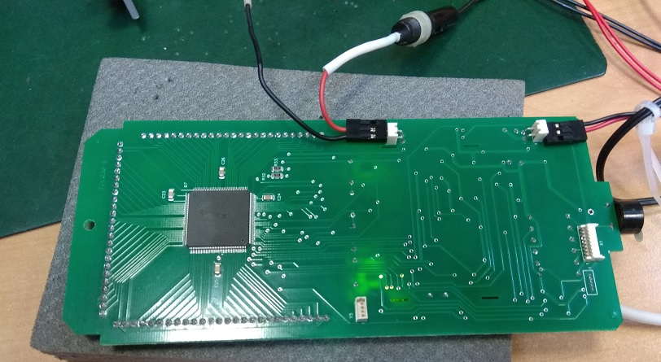
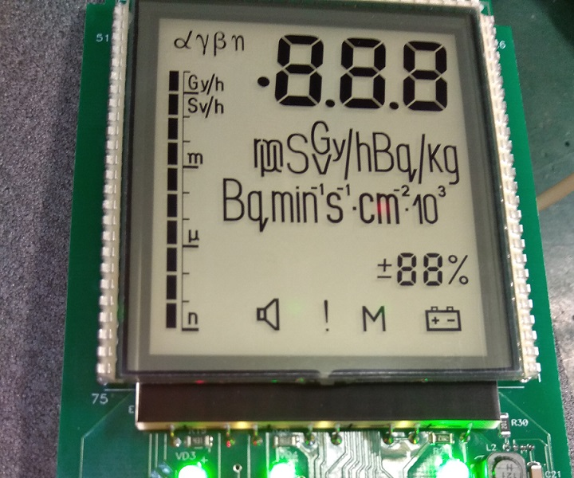
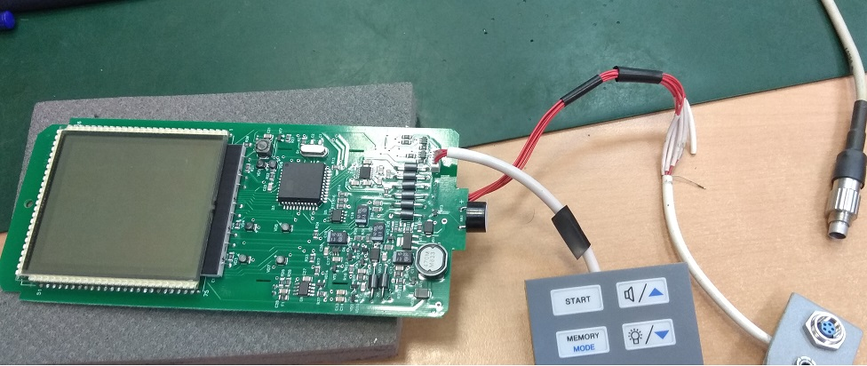

↑
БОИ-2. Проверка Устройства обработки
- Подключить клавиатуру
- Подключить плату к аккумулятору. При включении удерживать кнопку «ПАМЯТЬ»
- Проверяем потребление. Около 11мА
- Вводим инициализацию 957. Для этого нажимаем 3 раза на кнопку «ПАМЯТЬ». Появляются “---”. Нажимаем 2 раза на
кнопку «ПУСК». Первый «-» начнет мигать. Кнопками вверх/вниз вводим 9. Нажимаем «ПУСК» и мигает второй
символ. Вводим 5. Так же вводим 7
- Выключаем плату
- Подключаем адаптер

Отключаем аккумулятор. Индикатор заряда должен быть 0%. Подключаем аккумулятор. Индикатор заряда — 55%
- Включаем плату одновременно зажимаю кнопку подсветки. Проверяем работу всех сегментов

- Двойным нажатием кнопки подсветки включаем полную подсветку и проверяем отсутствие грязи и мусора
- Выключаем плату. Смотрим ток зарядки (около 400-450 мА)
- Отключаем аккумулятор и адаптер. Подключаем через переходник к компьютеру

Проверяем наличие обмена с Background calibration
- Выключаем плату и отсоединяем. Ставим отметку о проверке